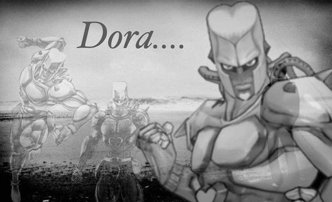

Jojos Bizzarre adventure parte 4

La cuarta parte de JoJo's Bizarre Adventure, conocida como "Diamond is Unbreakable", nos lleva a la tranquila ciudad japonesa de Morioh, donde seguimos las aventuras de Josuke Higashikata, un joven con un corazón noble y un Stand poderoso. En esta parte, la historia se centra en la búsqueda de justicia y la protección de la comunidad local, mientras Josuke y sus amigos se enfrentan a una serie de enemigos con habilidades sobrenaturales.
"Diamond is Unbreakable" se distingue por su enfoque en el misterio y la intriga dentro de un entorno urbano aparentemente pacífico. A medida que los personajes exploran los oscuros secretos de Morioh y se enfrentan a enemigos cada vez más desafiantes, la serie ofrece una combinación única de humor, suspense y acción emocionante. Esta parte también destaca por sus vívidos personajes secundarios y su exploración de temas como la amistad, la identidad y la redención, convirtiéndola en una parte inolvidable de la saga JoJo.